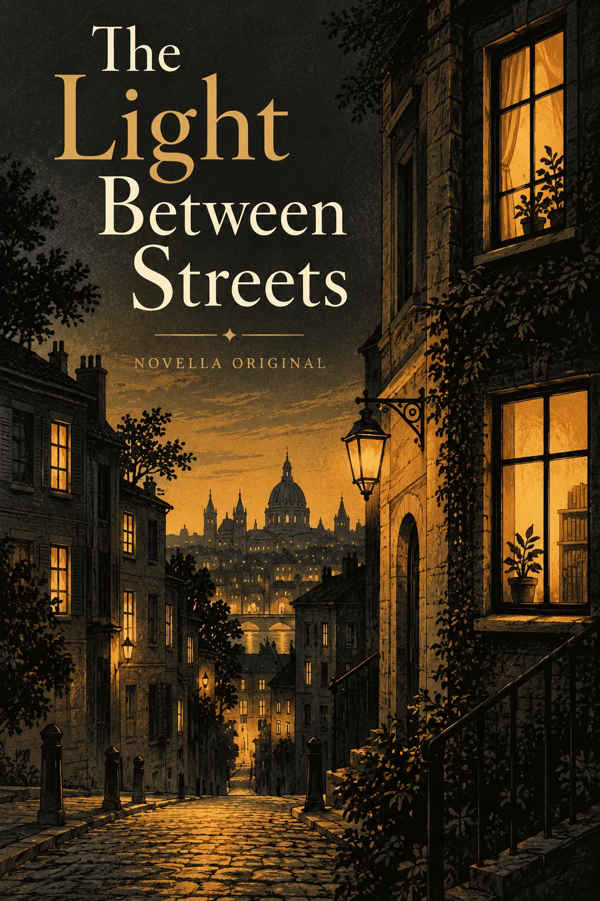

JOCELYN MARTINEZ / UX/UI + VISUAL DESIGN
Clear interactions.
Distinct identities.
I’m Jocelyn, a UX/UI and visual designer building useful digital experiences and the visual systems around them.
From an attendance record to a printed guide: thoughtful interactions, expressive typography and a Computer Science foundation.
Open to junior & associate design rolesSelected work
PRODUCT THINKING × VISUAL CHARACTERStart with a consequential workflow, then explore identity, civic interaction and cultural design.
8 projects
IMHERE / A SHARED RECORD
Being here
should be
clear.
DES 101 · SESSION 04A little context.
A fairer decision.
Student 04Needs review
Check-in could not be confirmed.
Current record
Needs review→Proposed
Present
EXPLAIN THE CHANGE BEFORE SAVING Product systems / Interaction design
An attendance experience that connects student check-in, faculty review and explained corrections.
Visual identity / Product / Packaging
A garment-repair studio connecting a clear request, a considered decision and a useful record. A complete identity, product and print ecosystem.

HOLLAND, MICHIGANYour walk.
Your pace.
Your Holland.
01 / A LITTLE DISCOVERYChoose. Explore. Pause.A welcoming walking-guide concept.
Civic experience / Accessible interaction
A welcoming walking guide for Holland, Michigan—with a simpler visitor flow and a clearer editorial process behind it.
INTERVALA FESTIVAL FOR CLOSE LISTENING
MAKE
SPACE.For the sound.
For the silence.
For something new.
 THE ROOM IS PART OF THE INSTRUMENT.
THE ROOM IS PART OF THE INSTRUMENT.The programme.SATURDAY / 01
11:00Deep listeningROOM 01
12:30Tape as landscapeROOM 03
FIND YOUR SESSION ↗
Cultural identity / Product / Editorial
A listening-festival identity, personal programme and pocket guide. Print, wayfinding and product design working as one system.
ÁUREA / THE PERFUME INDEXA note.
A feeling.
A beginning.
01 / OpeningPink pepper, bergamot02 / HeartRose petals, peony03 / BaseWhite musk, pale woods
VESPER ROSE · ORIGINAL SAMPLE PROFILE Information design / Editorial UI
A perfume database that connects note-led discovery, comparable records and a personal sampling journal.
LOOPLINE / KITCHEN → COMMUNITY
GOOD
FOOD.
FURTHER.
THE HANDOFF / LL–004DETAILS
THAT TRAVEL.
- WHAT
- Packed vegetable lunches
- HOW MUCH
- 12 containers
- WHEN
- Preferred: 14:00–15:00
SAMPLE RECORD / PARTNER REVIEW PENDING Brand systems / Service design
A food-rescue identity and partner workspace built around the details that make a handoff understandable.
NOVELLA / THE PERSONAL EDITVOL. 01

AN OPENING, NOT AN ALGORITHM.Let the
writing
find you.
“On the first morning, the street looked smaller than she remembered.”
ORIGINAL FICTION / AN EXCERPT STUDY Editorial experience / Reading interaction
A reading discovery experience that offers mood-led browsing, an optional blind excerpt and a personal place for passages.
NUTRIVA / THE EVERYDAY KITCHENMore possibility.
Less figuring out.
AT HOMELentils ✓
Olive oil ✓
Carrots + ADD TO LIST
START WITH WHAT YOU HAVE.  TONIGHT’S IDEA / GOLDEN LENTIL SOUP
TONIGHT’S IDEA / GOLDEN LENTIL SOUPConnected data / Everyday utility
A connected pantry, meal plan and grocery list that explains why an ingredient appears and lets people correct the input.
FROM DESIGN INTENT TO WORKING BEHAVIOR
The details
make the difference.
A filter you can undo. A correction you can explain. A visual identity that still works at the size of a button.